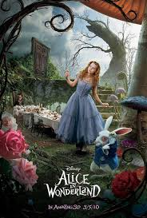
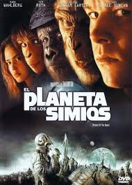

Acerca de
Burton esta Loco Tim Burton es ese tipo de hombre al que algunos llaman genio y otros llaman loco.
Es Muy Creativo Su estilo creativo, al igual que muchas de sus películas, parece que solo pueden verse en blanco y negro, sin medias tintas ni más opción que los extremos: o te gusta o lo odias.
Es Talentoso Con una horda de admiradores y casi el mismo número de detractores, Tim Burton sigue siendo uno de los directores más populares de nuestro tiempo, que intenta ofrecer una visión alternativa y bastante más lóbrega del mundo que nos rodea y de las historias que rondan en su cabeza o que saca de viejos cuentos. Burton, en sus películas, ha conseguido plasmar su forma de ver la realidad a través de un filtro gótico y con historias que brillan por su sensibilidad y su profunda complejidad psicológica. El hoy gran cineasta fue en su tiempo un joven aficionado a la ilustración y el dibujo que estudiaba en el Instituto de Arte de California, leía a Poe y veía las viejas películas de terror de los años 40.
Tanto Talento Le a dado Una fama enorme.



Peores Peliculas
Big Fish
Lo siento, pero no cuela. Burton necesitaba volver con urgencia a los céspedes que mejor sabe tratar después del castañazo de prestigio que se llevó con su remake simiesco, así que nada mejor que una tonelada de glucosa adulterada y forzado sentimentalismo del malo para presentar un bochornoso espectáculo que, además, está torpemente realizado. 'Big fish' está a mil millas de encontrarse entre lo mejor del cineasta, pero llegó en un momento en el que, por lo visto, el espectador necesitaba catarsis. O tal vez fue la película por la que empezó la generación cinéfila actual, probablemente la última que le quede al mundo.
Alicia en el País de las Maravillas
Se dice que en los años ochenta el cine espectáculo se forjaba en despachos de moqueta y cocaína. No sé si será cierto o una leyenda urbana, pero 'Alicia en el país de las maravillas' bien podría haber salido de ahí. La diferencia es que aquellos trabajos eran mucho más creativos y valientes. Esta versión condenadamente fea de un clásico mucho más limpito (aunque puede que incluso más perverso) no se sostiene por ninguna parte y de no ser por la que arranca el ranking sería la peor película de Tim Burton.
El planeta de los simios
Burton demostró que era humano. Que detrás de las gafas de sol, los rizos y la barba de cuatro días lo que quedaba no distaba demasiado del mono. Vamos, como tú y como yo. Y su visión de la novela de Pierre Boulle que ya había bordado Franklin J. Schaffner fue un fracaso creativo.